|
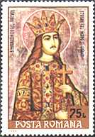 |
From the Voronet Monastery |

A nun monastery consecrated to St.George, Voronet lies at
walking distance from the Gura Humorului town. An old Romanian chronicle written
by Ion Neculce records that Stephen the Great founded Voronet
Monastery in 1488 to fulfil a pledge to the hermit Daniil who
had encouraged the ruling prince of Moldavia to chase the Turks from Wallachia.
After having won the battle against the Turks, Stephen erected Voronet
in three months and 21 days, on the very spot Daniil had his small
wooden hermitage.
Its interior and exterior paintings were made later on, between 1534-1535,
during prince Petru Rares' rule and at the behest of Metropolitan Grigore
Rosca, a salient scholar of his time, who also added to it a porch in 1547.
|
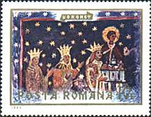 |
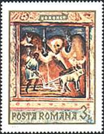 |
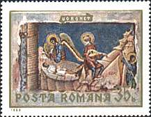 |
Voronet
Monastery is probably the most accomplished sample of artistic achievement in
Moldavian architecture and painting. The monastery was built at a time of peace
with the Turks, when Stephen had centralized the state, giving a new impetus to
its economy and culture.
The Church has a trefoil form proper to the medieval
Moldavian architectural style, predominantly Byzantine. Voronet
is quite impressive by its size, i.e. 25.50 m long (apart from the porch), and
7.70 m wide. The doors of the porch have a Renaissance framing, whereas the
stone carvings of the broken arches at doors and windows belong to the Gothic
style. The existence of exterior buttresses signal a Roman and Gothic
architectural influence in the strengthening of constructions, and hence the
affiliation to western styles of art.
The paintings on the church walls which have been made by
masters whose names remained unknown, except that of Marcu, master
painter, whose name is inscribed on the left side of the entrance door, have a
distinctive chromatic harmony, a special manner of composition, nerve and
clarity. They are imbued with the softness and warmth of the Moldavian spirit,
whereas their colors were drawn from the surrounding nature abounding in blue
and green.
|
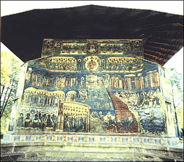 |
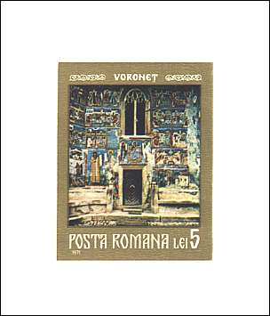 |
Voronet
Monastery has been dubbed the "Oriental Sistine Chapel", whereas Voronet
blue, a color obtained from lapis lazuli entered the lexicon of art
alongside Titian red and Veronese green.
The artistic approach of painters has a warm humanism, as religious scenes
depict Moldavian living people of those times. Thus the angels of the frescoes
have the sweet faces of Moldavian women, the archangels blow the bucium
- a Romanian shepherd's musical instrument similar to an alpenhorn-, the souls
carried to heaven are wrapped in Moldavian towels, whereas the souls doomed to
the fire of hell wear turbans just like the Turks - Moldavia's fierce enemies at
the time.
|
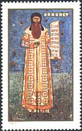 |
 |
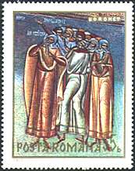 |
The "Last Judgement", painted on the western wall of the church, is probably the finest composition among the paintings of the monasteries in Moldavia. In the fire of hell (a grand funnel of live coals opening at the feet of Jesus), sinners among whom, illustrious characters, kings, popes are struggling their way out. Near the seat of judgement, Adam and Eve are represented, along with bands of prophets, hierarchs, martyrs and Moses. In another illustration, a hand is holding the scales of justice where the sins of mankind judgement are being weighed. To the right and to the left, the devils are quarreling for possession of the accused. Among the sinners, there are many Turks and Tartars, with harsh faces and fierce looks.
|
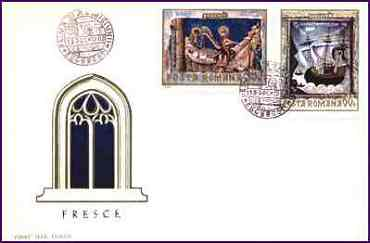 |
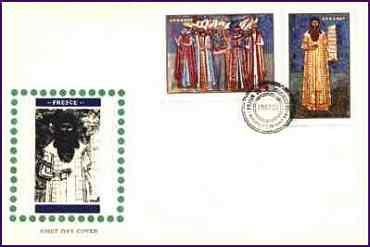 |
The "Resurrection of
the Dead", a very dramatic scene, is performed to the sound of the bucium.
The animals, too, take part in the judgement, handing back fragments of human
torsos to complete the bodies that were torn to pieces by wild beasts. The deer
alone has nothing to hand back, for in Romanian folklore it stands for
innocence. At the Gate of Heaven people rush to get in; the painter wishes to
express humorously how people hurry to enter the Garden of Eden.
The southern
wall displays "Jesse's Tree", the fabulous genealogy of
Jesus. A fresco including eight panels and almost one hundred characters
develops in luxurious interweaving of vine branches and tendrils. Also on the
southern side are painted the portraits of Grigore Rosca and Daniil
the Hermit.
On the northern wall, more exposed to the elements of
weather, there are still a few elements representing the "Creation of
the World" and a popular legend, "Temptation of Adam",
which is also painted at Sucevita and Moldovita monasteries.
|
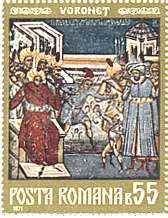 |
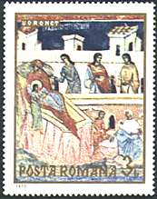 |
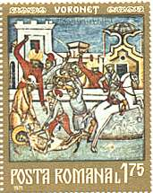 |
Among the
paintings on the interior walls of the church mentioned should be made of "The
Last Supper", wheareas the nave holds a painting representing Stephen
the Great, his wife, Lady Maria Voichita, and their son, Bogdan.
The chair of the ruler in the church is a masterpiece of wood carving.
The history of the Romanian culture has included
Voronet Monastery as a place of reference where historic and religious
works were issued. Among them, it is worth mentioning "The Old
Manuscript from Voronet" and "The Psalm Book from Voronet".
Daniil the Hermit has been canonized as a saint and celebrated by the
Orthodox Church on the 18th of December; his tomb is to be found on the right
hand side of the narthex. (Source:
after a Romanian travel
site).
Background: Voronet Monastery, outer wall painting.
Links to other Monastery Frescoes pages: Introduction, Moldovita, Sucevita
| Published:
07/01/01. Revised:
01/02/06.
Copyright © 1999 - 2006 by Victor Manta, Switzerland. All rights reserved in all countries. |